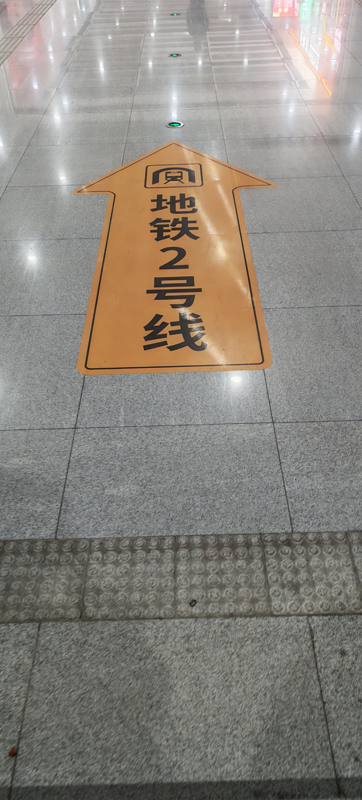
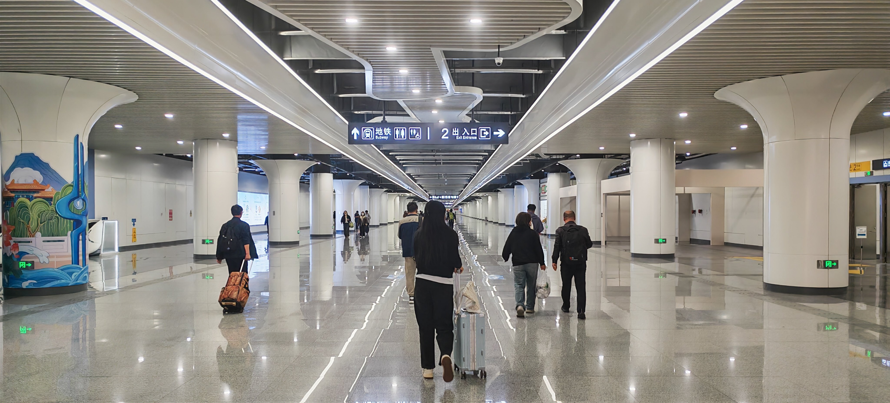
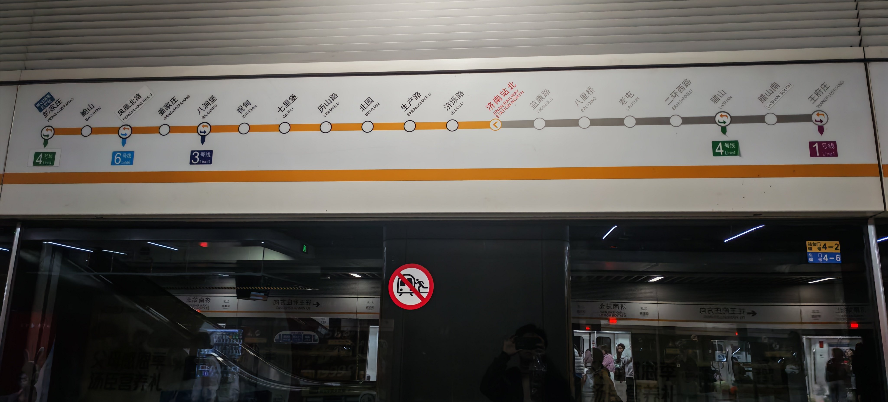
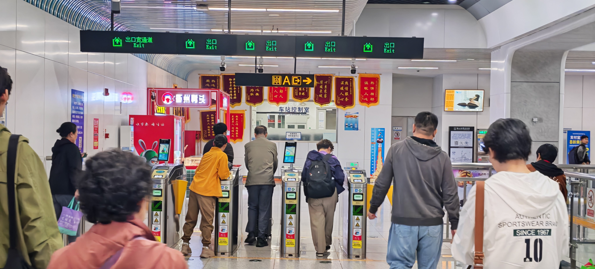
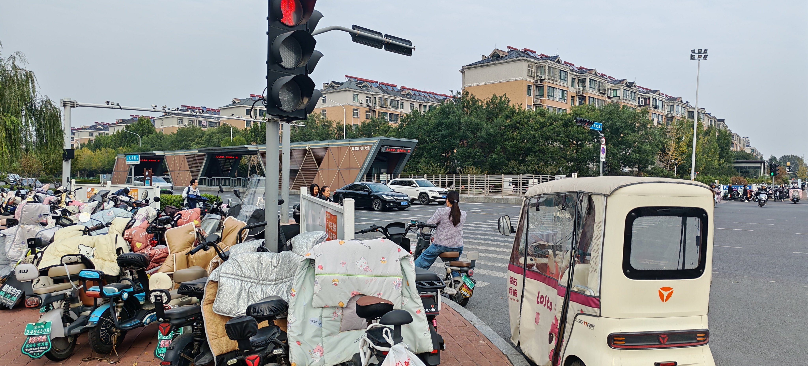
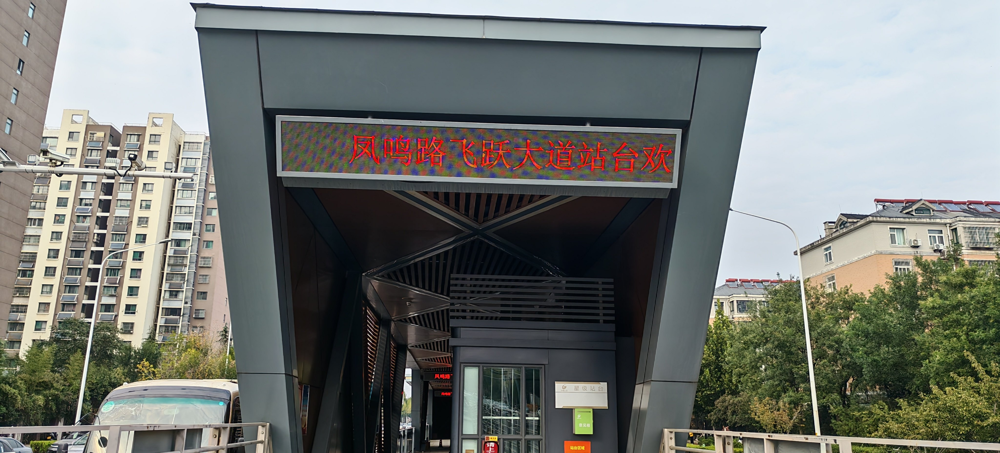
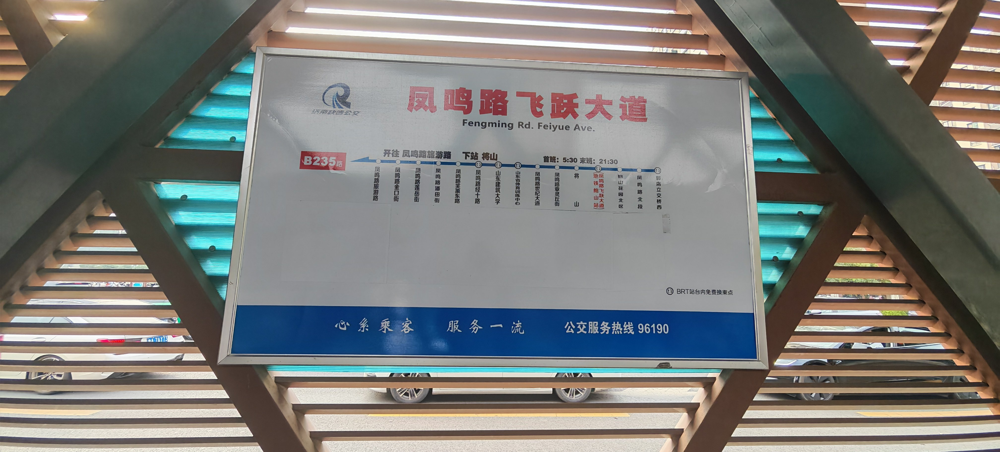
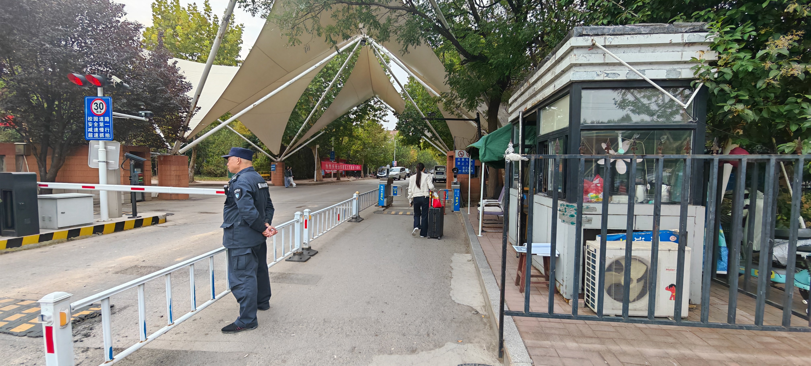

路线流程
1.从济南站北出站口出站
2.出站后直走找到红色“地铁”地标
3.跟着地标走找到2号线地铁进站口
4.进站后乘坐方向为彭家庄的地铁
5.乘坐10站后在“鲍山”站下车（全程约30分钟）
6.从A口出站后往东走到马路中央的公交车停靠站乘坐B235路公交车，凤鸣路旅游路方向
7.乘坐4站后在“山东省体育训练中心”下车（全程约10分钟）
8.下车后往西走就看到山建的小东门了
前往地铁站
识别出站口
出站口如下图所示

济南站北出站口
寻找地铁站
请沿红色地标前往地铁站（如下图）

地标
后沿黄色地标前往地铁2号线

黄色地标
然后通过一条长通道到达地铁站

通道
购票相关
 开通济南的支付宝快捷交通码（推荐）
开通济南的支付宝快捷交通码（推荐）
 开通369出行快捷交通码
开通369出行快捷交通码
通过安检后乘坐2号线，彭家庄方向，乘坐10站到达终点站“鲍山”站约30分钟

地铁线路
地铁转公交
凤鸣路飞跃大道”公交停靠站乘坐B235路公交站，凤鸣路旅游路方向，乘坐4站到达终点站“山东省体育训练中心”约10分钟
注意：下车站一定要是“山东省体育训练中心”，本人实地考察的时候发现导航竟然会导向此站的前一站“凤鸣路世纪大道”会导致路途变长

鲍山站A口出站

公交车停靠站

凤鸣路飞跃大道

路线图
到达山东建筑大学小东门
“山东省体育训练中心”下车后出站左手边就是山东建筑大学小东门，从这即可入校,入校指南详见请看《小东门入校指南》

山东建筑大学小东门
《小东门入校指南》